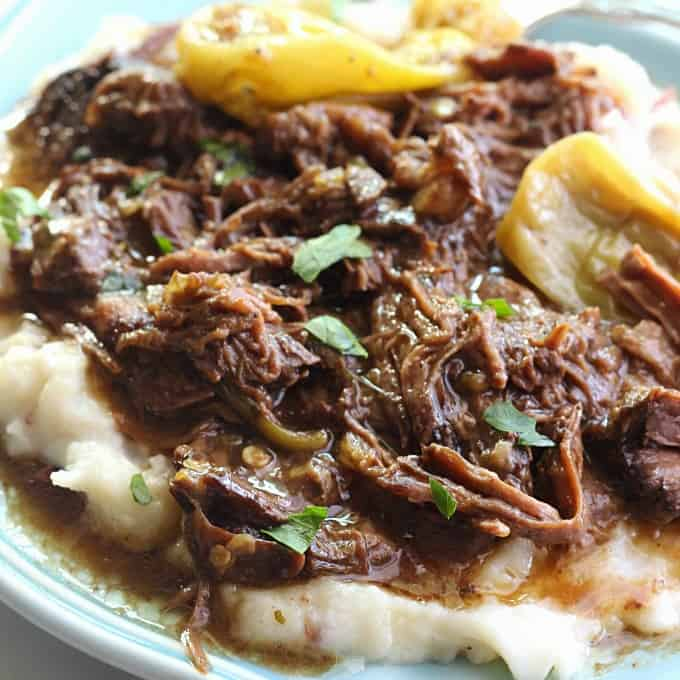

Mississipi Pot Roast

Description
Easy to prepare and delicious pot roast recipe for the crock pot.
Ingredients
- 1 (3-4 pounds) chuck roast
- 1 packet ranch dressing mix
- 1 packet au jus gravy mix
- 1/4 cup butter
- 4-5 pepperoncini peppers
Steps
- Place roast in slow cooker
- Sprinkle ranch dressing mix and au jus mix over roast
- Place peppers on top of the mixes
- Add butter
- Cook on low heat for 8 hours
Note:
Image and recipe from https://belleofthekitchen.com/mississippi-pot-roast/